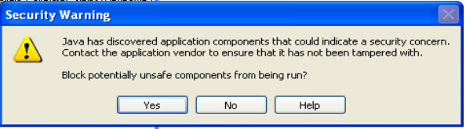
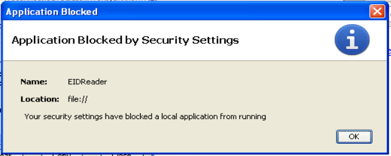

20131119 (Tuesday, 19 November 2013)¶
Today I continued to Work on The EIDReader applet, looking for the explanation for yesterday’s last problem:
But trying to read my Belgian card gives a new error:
java.lang.SecurityException: trusted loader attempted to load sandboxed resource from file:/t:/applets/eid-applet-service.jarI added Trusted-Library: true to my Manifest.txt and re-signed. Now there’s neither an error message nor a result, nor any output to the Java console! The applet just exits and that’s all. This happens as soon as it calls TlvParser.parse() (which has been imported from be.fedict.eid.applet.service.impl.tlv.TlvParser.
I am married with Python, and before diving into documents like Mixing Privileged Code and Sandbox Code Ensuring Application and Applet Security I always need first to put on my mental diving dress ;-) No, I was kidding: I won’t say that programming a Java applet is frustrating, it’s just... different.
If any experienced Java programmer has mercy with me, please have a look at my code, maybe you need just a few moments to see what I am doing wrong. I have it working on an IcedTea client, but Sun Java keeps to nag me with problems that are difficult to reproduce.
Today I tried with different constellations of
Trusted-Only: true and
Trusted-Library: true.
Also with * instead of T=0 after reading
this.
And I am completely lost because I even don’t manage to clearly document the problems I saw today.
For example here is a mysterious console output:
Java Plug-in 10.45.2.18
Using JRE version 1.7.0_45-b18 Java HotSpot(TM) Client VM
User home directory = C:\Documents and Settings\Luc Saffre
----------------------------------------------------
c: clear console window
f: finalize objects on finalization queue
g: garbage collect
h: display this help message
l: dump classloader list
m: print memory usage
o: trigger logging
q: hide console
r: reload policy configuration
s: dump system and deployment properties
t: dump thread list
v: dump thread stack
x: clear classloader cache
0-5: set trace level to <n>
----------------------------------------------------
javax.smartcardio.CardException: connect() failed
at sun.security.smartcardio.TerminalImpl.connect(Unknown Source)
at src.eidreader.EIDReader$2.run(EIDReader.java:452)
at java.security.AccessController.doPrivileged(Native Method)
at src.eidreader.EIDReader.readCard(EIDReader.java:438)
at sun.reflect.NativeMethodAccessorImpl.invoke0(Native Method)
at sun.reflect.NativeMethodAccessorImpl.invoke(Unknown Source)
at sun.reflect.DelegatingMethodAccessorImpl.invoke(Unknown Source)
at java.lang.reflect.Method.invoke(Unknown Source)
at sun.plugin.javascript.Trampoline.invoke(Unknown Source)
at sun.reflect.NativeMethodAccessorImpl.invoke0(Native Method)
at sun.reflect.NativeMethodAccessorImpl.invoke(Unknown Source)
at sun.reflect.DelegatingMethodAccessorImpl.invoke(Unknown Source)
at java.lang.reflect.Method.invoke(Unknown Source)
at sun.plugin.javascript.JSClassLoader.invoke(Unknown Source)
at sun.plugin2.liveconnect.JavaClass$MethodInfo.invoke(Unknown Source)
at sun.plugin2.liveconnect.JavaClass$MemberBundle.invoke(Unknown Source)
at sun.plugin2.liveconnect.JavaClass.invoke0(Unknown Source)
at sun.plugin2.liveconnect.JavaClass.invoke(Unknown Source)
at sun.plugin2.main.client.LiveConnectSupport$PerAppletInfo$DefaultInvocationDelegate.invoke(Unknown Source)
at sun.plugin2.main.client.LiveConnectSupport$PerAppletInfo$3.run(Unknown Source)
at java.security.AccessController.doPrivileged(Native Method)
at sun.plugin2.main.client.LiveConnectSupport$PerAppletInfo.doObjectOp(Unknown Source)
at sun.plugin2.main.client.LiveConnectSupport$PerAppletInfo$LiveConnectWorker.run(Unknown Source)
at java.lang.Thread.run(Unknown Source)
Caused by: sun.security.smartcardio.PCSCException: SCARD_E_PROTO_MISMATCH
at sun.security.smartcardio.PCSC.SCardConnect(Native Method)
at sun.security.smartcardio.CardImpl.<init>(Unknown Source)
... 24 more
Some screenshots:
 And here another console log:
It's a Belgian card
BelgianReader() constructor started
identityData has been read
com.sun.deploy.security.BlockedException: Your security settings have blocked a local application from running
at com.sun.deploy.security.SandboxSecurity.showBlockedDialog(Unknown Source)
at com.sun.deploy.security.SandboxSecurity.checkRunLocal(Unknown Source)
at com.sun.deploy.security.SandboxSecurity.checkUnsignedSandboxSecurity(Unknown Source)
at com.sun.deploy.security.SandboxSecurity.isPermissionGranted(Unknown Source)
at sun.plugin2.applet.Plugin2ClassLoader.isTrustedByTrustDecider(Unknown Source)
at sun.plugin2.applet.Plugin2ClassLoader.getPermissions(Unknown Source)
at sun.plugin2.applet.Applet2ClassLoader.getPermissions(Unknown Source)
at java.security.SecureClassLoader.getProtectionDomain(Unknown Source)
at java.security.SecureClassLoader.defineClass(Unknown Source)
at java.net.URLClassLoader.defineClass(Unknown Source)
at sun.reflect.NativeMethodAccessorImpl.invoke0(Native Method)
at sun.reflect.NativeMethodAccessorImpl.invoke(Unknown Source)
at sun.reflect.DelegatingMethodAccessorImpl.invoke(Unknown Source)
at java.lang.reflect.Method.invoke(Unknown Source)
at sun.plugin2.applet.Plugin2ClassLoader.defineClassHelper(Unknown Source)
at sun.plugin2.applet.Plugin2ClassLoader.access$100(Unknown Source)
at sun.plugin2.applet.Plugin2ClassLoader$2.run(Unknown Source)
at java.security.AccessController.doPrivileged(Native Method)
at sun.plugin2.applet.Plugin2ClassLoader.findClassHelper(Unknown Source)
at sun.plugin2.applet.Applet2ClassLoader.findClass(Unknown Source)
at sun.plugin2.applet.Plugin2ClassLoader.loadClass0(Unknown Source)
at sun.plugin2.applet.Plugin2ClassLoader.loadClass(Unknown Source)
at sun.plugin2.applet.Plugin2ClassLoader.loadClass(Unknown Source)
at java.lang.ClassLoader.loadClass(Unknown Source)
at src.eidreader.BelgianReader.<init>(EIDReader.java:234)
at src.eidreader.EIDReader$2.run(EIDReader.java:461)
at java.security.AccessController.doPrivileged(Native Method)
at src.eidreader.EIDReader.readCard(EIDReader.java:438)
at sun.reflect.NativeMethodAccessorImpl.invoke0(Native Method)
at sun.reflect.NativeMethodAccessorImpl.invoke(Unknown Source)
at sun.reflect.DelegatingMethodAccessorImpl.invoke(Unknown Source)
at java.lang.reflect.Method.invoke(Unknown Source)
at sun.plugin.javascript.Trampoline.invoke(Unknown Source)
at sun.reflect.NativeMethodAccessorImpl.invoke0(Native Method)
at sun.reflect.NativeMethodAccessorImpl.invoke(Unknown Source)
at sun.reflect.DelegatingMethodAccessorImpl.invoke(Unknown Source)
at java.lang.reflect.Method.invoke(Unknown Source)
at sun.plugin.javascript.JSClassLoader.invoke(Unknown Source)
at sun.plugin2.liveconnect.JavaClass$MethodInfo.invoke(Unknown Source)
at sun.plugin2.liveconnect.JavaClass$MemberBundle.invoke(Unknown Source)
at sun.plugin2.liveconnect.JavaClass.invoke0(Unknown Source)
at sun.plugin2.liveconnect.JavaClass.invoke(Unknown Source)
at sun.plugin2.main.client.LiveConnectSupport$PerAppletInfo$DefaultInvocationDelegate.invoke(Unknown Source)
at sun.plugin2.main.client.LiveConnectSupport$PerAppletInfo$3.run(Unknown Source)
at java.security.AccessController.doPrivileged(Native Method)
at sun.plugin2.main.client.LiveConnectSupport$PerAppletInfo.doObjectOp(Unknown Source)
at sun.plugin2.main.client.LiveConnectSupport$PerAppletInfo$LiveConnectWorker.run(Unknown Source)
at java.lang.Thread.run(Unknown Source)
Which IDE to use?¶
On such days I use to be more open for diversion. For example questions like the above seem more urgent than usual...
JetBrains announced in September a free edition of their PyCharm IDE. I even downloaded a version when i read about that, but then never opened the .tar.gz file because there are always so many other things to do.
Joe showed me (once again) that my minimalistic approach of using Geany as “IDE” leaves me without certain powerful tools, so I am going to invest some time in a successor for Geany.
So now I finally started to play with it. Looks truly both immense and easy to get started.
But while working on The EIDReader applet I noticed that .java files are not highlighted. And then I found a question How do I get YAML syntax highlighting in PyCharm? on Stackoverflow, and the answer is “YAML available in Pro edition ONLY”.
I guess that the same is true for my .java files. Which means that we cannot consider the community version as free software. And there is no fork of PyCharms which adds a free version of these functions. And I am not going to start such a fork. An IDE is for a software developer like a bus for a bus driver. It takes me much time to get used to a new IDE. And I’m not going to invest my time for free into a proprietary product as long as I didn’t even seriously investigate the free ones. So I am afraid that this was all I am going to say about PyCharms.
This blog entry I wrote it already with Emacs. I guess it is at least six years ago that I switched from Emacs to Scite, mainly because at that time I was working much in parallel on TIM and Lino, and I never managed to have Emacs display DOS box characters correctly. Now it works. Just for fun, here is a screenshot from TIM:
╔══════════════ General accounts balances ═════════════╗
║ Period from-to*1311 ║
║ Currency *EUR ║
║ X show initial balances ║
║ Pages from-to ║
║ Parameter set*LISTE ║
║ X generate PDF instead of printing ║
╚══════════════════════════════════════════════════════╝
It’s also funny to see how much my fingers still recognize their old
friend. M-q to reformat a paragraph while writing this blog entry,
C-x C-s to save the current buffer, ...
In my .bashrc I needed to say:
EDITOR="emacsclient -n"
Thanks to the authors of the Emacs Tour who helped me to quickly re-start Emacs.

{kind=link}
{kind=link}
{kind=link}